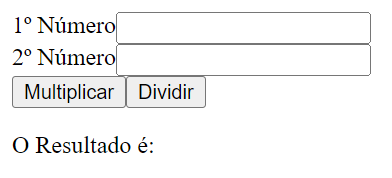

Exercício 1 - Estado
Crie uma página que contenha um botão. Cada vez que o utilizador clica no botão, deve surgir um alerta que mostre o texto "verdadeiro" ou "falso", alternadamente. Clicando a primeira vez, o alerta mostra "verdadeiro", clicando novamente, mostra "falso", clicando novamente, mostra novamente "verdadeiro" e assim sucessivamente. O código JS deverá ficar armazenado num ficheiro externo de nome "clicavel.js";
Exercício 2
Replique a página anterior e com o mesmo botão apresenta os dias da semana, ou seja, clicando a primeira vez deverá aparecer “Domingo”, a segunda vez, “Segunda”, e assim sucessivamente. Quando chegar ao final da semana deverá começar o processo do início. O exercício deverá ser elaborado de duas formas diferentes, com recurso a:
- Utilizar
if.. else..(ouif.. else if..); -
Utilizar um array com os dias da semana:
let dia = 0;const dias = ["Domingo", "Segunda", "Terça", "Quarta", "Quinta", "Sexta", "Sábado"];
Exercício 3
Crie um página onde constem 4 labels com o seguinte texto ( #f49e42, #7e8477, #47a4ef e #ad0c39) e uma div vazia. Cada vez que o utilizador passar o rato por cima de uma label o background da div deve ser preenchido com a cor da respetiva caixa de texto. Quando o rato não está sobre nenhuma label, o background da div fica sem definição da cor de background. O código JS deverá ficar armazenado num ficheiro externo de nome 'pintacores.js';
Exercício 4
Crie um página com base na figura seguinte. Através de JS deverá obter um número aleatório entre 0 e 10. Quando o utilizador clica no botão, deverá surgir um alerta que diga se o utilizador acertou no número correto. O input deverá ter o seguinte comportamento:
- Quando o utilizador falha a tentativa, o input deverá ser limpo.
- Quando o utilizador acerta a tentativa, o input deverá ficar disable.
Exercício 6
Replique o exercício anterior e considere:
- Número aleatório entre 0 e 100.
- O utilizador é avisado se o número colocado é inferior ou superior ao pretendido.
Exercício 7
Crie uma página que peça ao utilizador o preenchimento de dois valores. Ao clicar em cada um dos botões terá que aparecer o resultado à frente do texto "O Resultado é: "
Exercício 8
Replique a página anterior:
-
Introduzir validação de campos do formulário utilizando regex.
- Garanta que os dois campos são preenchidos
- Garanta que no caso da divisão não poderá ser preenchido o valor 0
- ...
Exercício 9
Após ter concluído todos os exercícios anteriores, crie uma nova página que disponibilize links e descrições para cada um dos exercícios anteriores. A apresentação estética da página deverá ser cuidada, recorrendo a estilização CSS e tipos de letra externos (Google Fonts, etc.). Fica ao seu critério a definição do layout desta página. O código JS deverá ficar armazenado num ficheiro externo de nome 'fichajavascript.js'